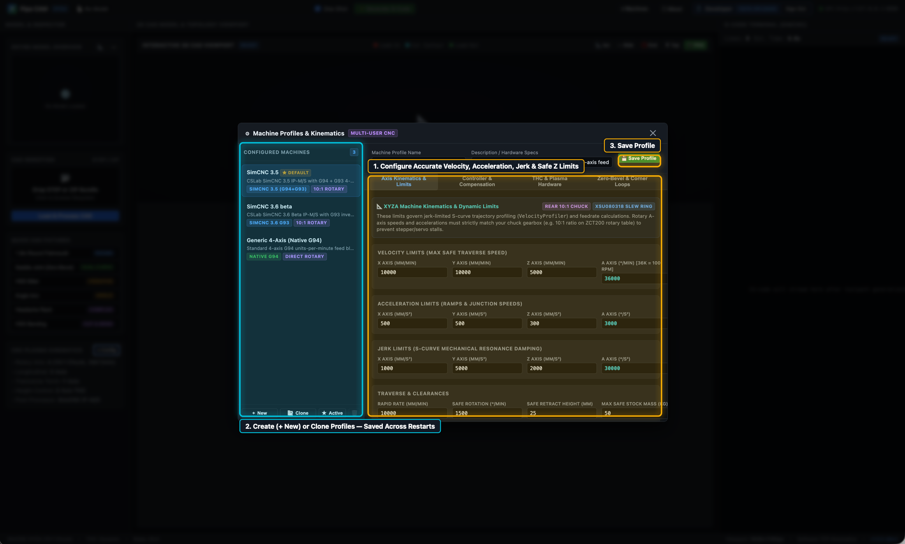
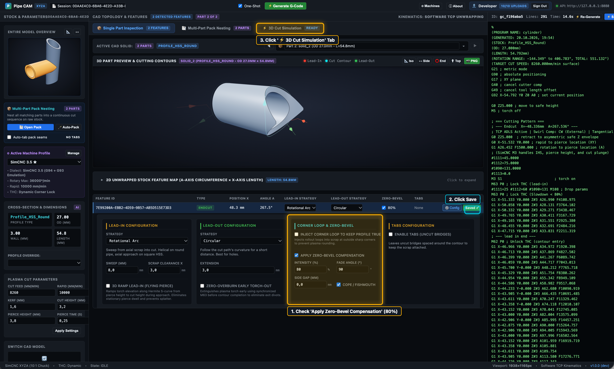
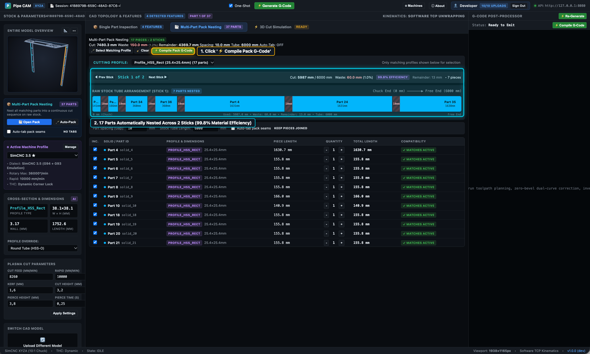
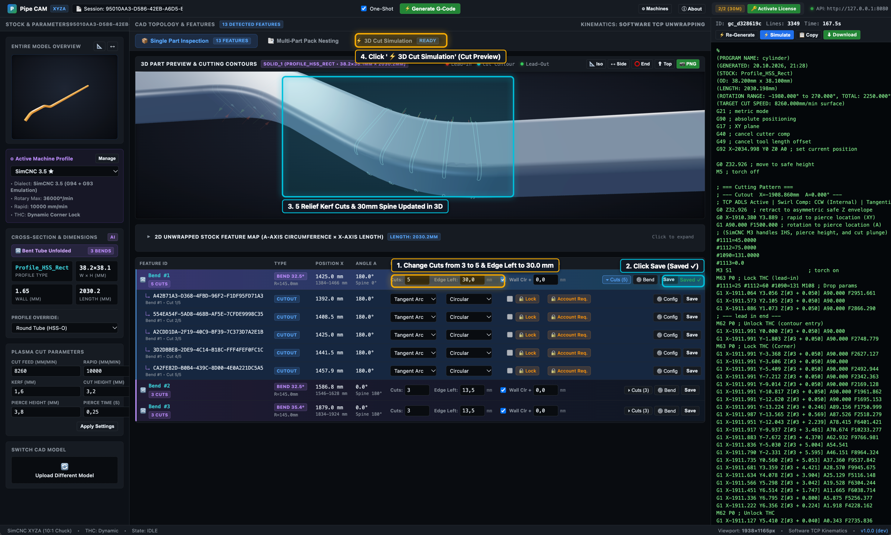
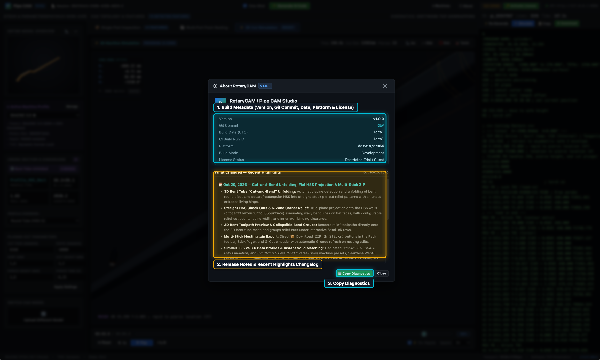

Operator Guides & CAM Workflows
Follow our step-by-step visual walkthroughs to configure your 4-axis rotary plasma kinematics, tune per-contour lead-ins and zero-bevel compensation, pack multi-tube STEP assemblies onto raw stock sticks, unfold bent HSS & HSS-O sticks with kerf relief cuts, and inspect release changelogs.

TUTORIAL 01 • 5 STEPSBasic Machine Configuration
Configure your 4-axis CNC plasma kinematics, controller dialect (G94 vs. G93 inverse-time), synchronous Torch Height Control (THC) locking, and default zero-bevel & corner-loop parameters.
- Velocity, acceleration, jerk & Safe Z clearance limits
- SimCNC G94+G93 emulation vs. native G93 inverse-time
- Synchronous M62/M63 THC locking during corner slowdowns
- Creating, cloning & persisting multiple machine profiles

TUTORIAL 02 • 8 STEPSUI Layout & STEP Cut Path Configuration
Tour the 3D CAD assembly inspector, switch between individual tube solids, inspect lead-in/cut/lead-out contours, apply Zero-Bevel Dual-Curve compensation on a saddle joint, and verify in 3D simulation.
- Entire Model Overview & Active CAD Solid switching
- 3D part preview & interactive contour selection (`ENDCUT`)
- Per-contour Lead-In, Lead-Out, Corner Loop & Zero-Bevel (80%)
- Full 4-axis (XYZA) 3D toolpath simulation & live DRO

TUTORIAL 03 • 6 STEPSMulti-Part Stick Nesting
Load a complex 37-part Headache Rack assembly, filter parts by detected cross-section profile, automatically pack 17 matching tubes across two 6000 mm sticks at 99.8% efficiency, and export per-stick G-code.
- Automatic cross-section profile detection & filtering
- Multi-stick 1D bin packing with configurable part spacing
- One-click Pack G-Code compilation for all sticks
- Per-stick `.nc` download & 3D multi-stick simulation

TUTORIAL 04 • 5 STEPSBending HSS & HSS-O Sticks
Load a 3D bent tube STEP fixture, automatically unfold its 3 bends into a straight stick with kerf-bending relief slots, customize cut counts (`3 → 5`) and spine bridge width (`Edge Left: 30 mm`), preview in 3D, and download G-code.
- Automatic 3D bent-tube spine detection & unfolding
- Collapsible per-bend relief cut inspection (`▸ Cuts (3)`)
- Custom relief cut count (`5`) & living-hinge spine (`Edge Left: 30 mm`)
- 3D straight-stick Cut Preview & one-click `.nc` export

TUTORIAL 05 • 2 STEPSBuild Information & Changelog
Open the built-in `ⓘ About` modal from the top-right header bar to inspect exact build provenance (version, Git commit, UTC date, platform, license status), browse recent release highlights, and copy system diagnostics.
- Top-right `ⓘ About` quick access from any workspace tab
- Version, Git commit hash, platform & license status table
- Built-in chronological release notes & feature highlights
- One-click `📋 Copy Diagnostics` for support tickets
Recommended First-Time Setup Sequence
If you are setting up Pipe CAM for a new rotary plasma table, start with Tutorial 01: Basic Machine Configuration. Because Pipe CAM executes a deterministic physics-based S-curve velocity profiler and Tool Center Point (TCP) unwrap in software, entering your machine's true axis velocity/acceleration limits and selecting the right THC lock strategy (`M62/M63` vs. `M-Codes`) ensures your generated G-code runs at peak surface speed without corner divots or rotary motor stalls.